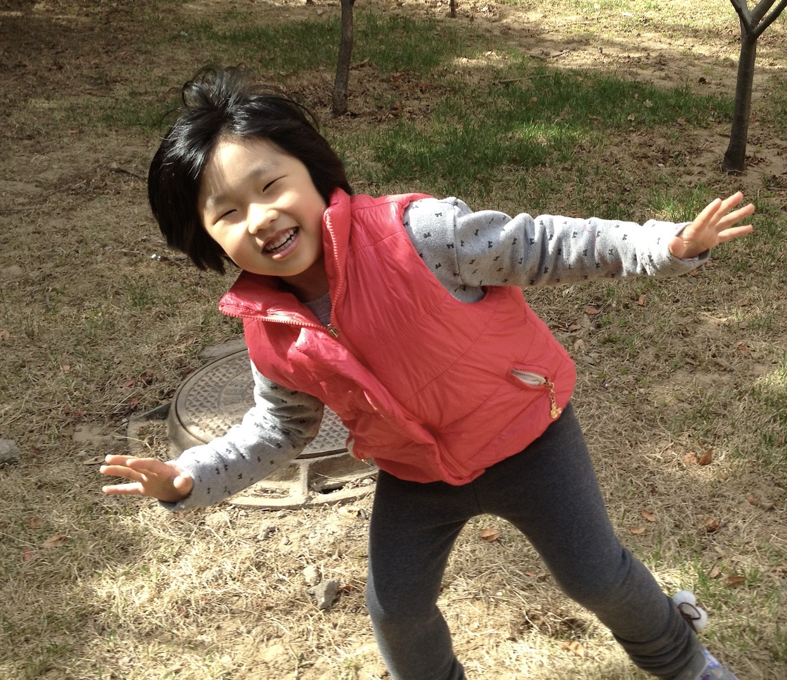

People
Researchers

Lingdao Z.
Research scientist specializing in parenting and cross-cultural psycholinguistics. Once debated a teddy bear on language acquisition theories.

Goose L.
Research scientist specializing in gene regulation through interdisciplinary methods. Known for combining developmental biology with horse diplomacy. Friendship is Magic!

Tiger U.
Research scientist specializing in quantum computing, ai, hackathons, and their applications to tigers and all big/small cats.
Technician

Paul Frank
Technician with a Math-CS background. Specializes in debugging baby monitors, debugged an unsolvable code with toy car, remotes encrypting lullabies, and reverse-engineering pacifier algorithms.
Research Assistant

Autistic Z.
Specializes in moral reasoning and human cognition especially focusing on driving people crazy without her noticing
Selected Publications
- Frank P. (2025). Miracle! The Mystery of Evolution: How I evolved from a Monkey to a Software Engineer. Evolutionary Biology.
- Zhao L. (2025). Revenge on Disobedient Children: A Methodological Framework. Child Development.
- Zhao L., Liu G. (2025). Spanking: A More Historically Supported and Effective Alternative to Positive Discipline. Archives of Behavioral Optimization.
- Liu G., Zhao L. (2025). Babies Leading the Epigenetic Research Field. Journal of Tiny Genomes.
- Zhao L., Liu G. (2024). Nap Schedules and Chromatin Accessibility. Baby Bio Letters.
- The Team. (2023). Our Research Focuses on the Science of Aging. Annual Review of Soft Blankets.